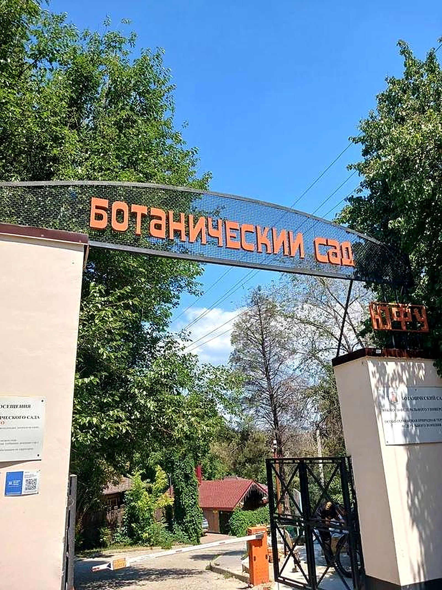
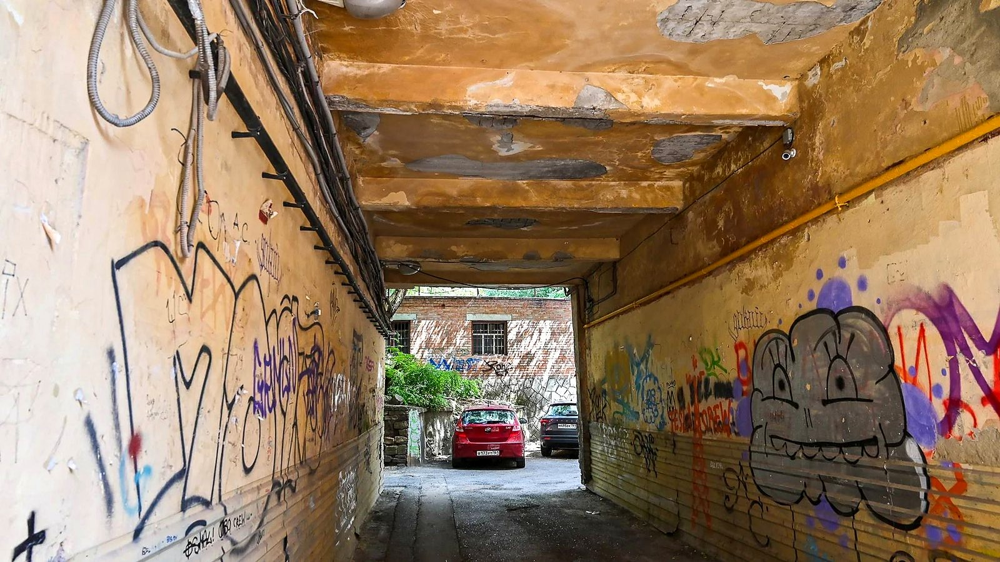
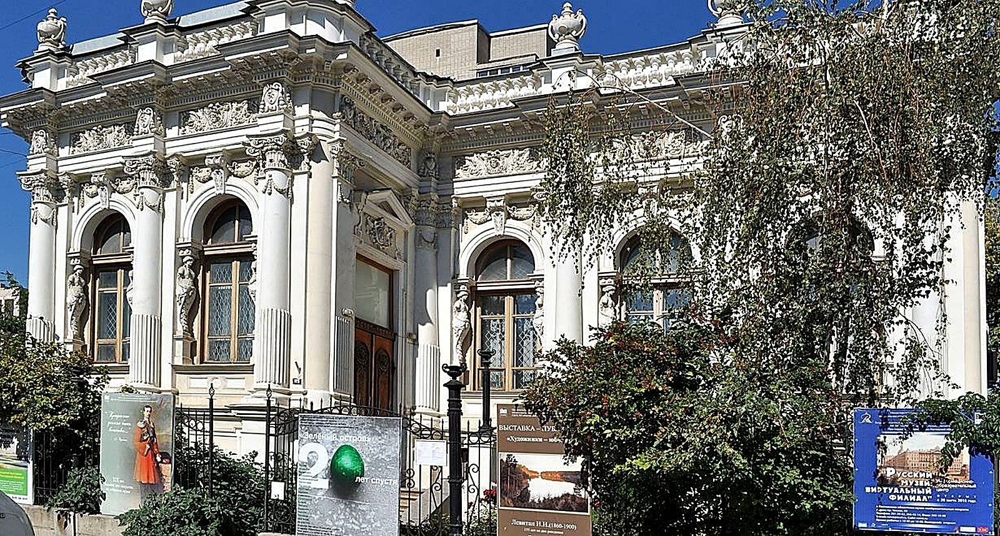
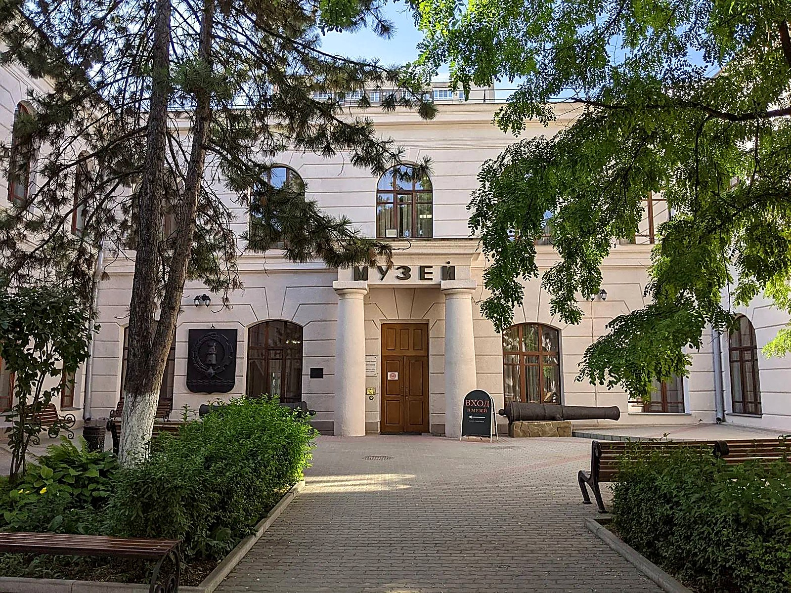

↖ СтенаПрохода нет
↑ СтенаПрохода нет
↗ СтенаПрохода нет
↖ СтенаПрохода нет
↑ СтенаПрохода нет
↗ СтенаПрохода нет

← Ботанический сад ЮФУЯпонский сад и оранжерея
Цель: найти Академию архитектуры и искусств ЮФУ
Дворики-колодцы
Дворики на улицах Станиславского и Шаумяна закрыты со всех сторон. Туристы заглядывают сюда редко.
Подсказка: Академии здесь нет. Загляните в музей, где у входа стоит старая пушка, а внутри хранится история Дона.
→ СтенаПрохода нет

↙ Музей изобразительных искусствРусская и европейская живопись
↓ Краеведческий музейОдин из старейших музеев Юга
↘ СтенаПрохода нет